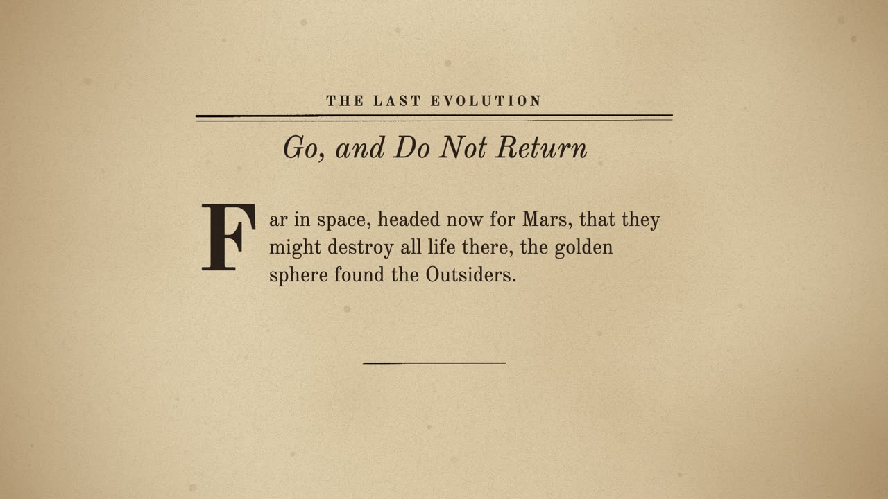
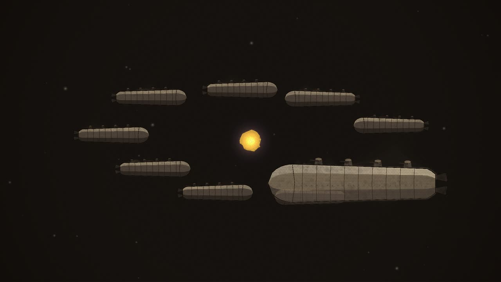
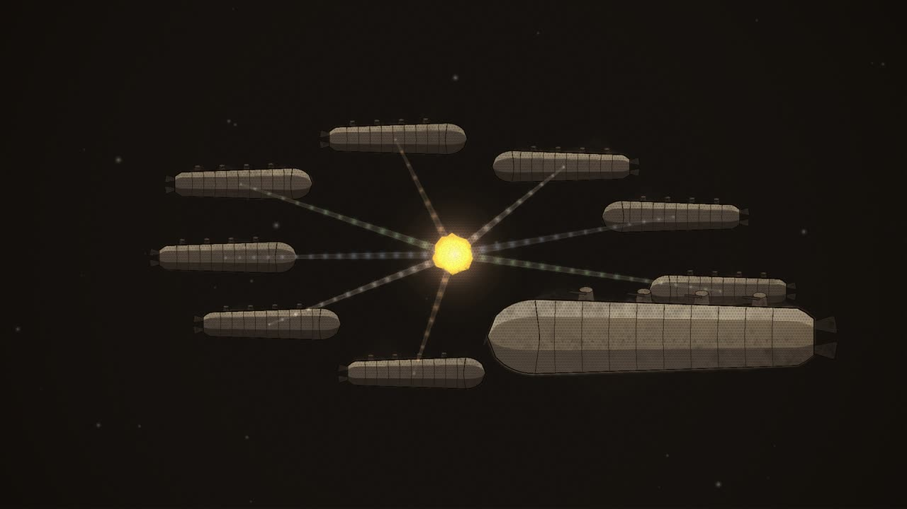
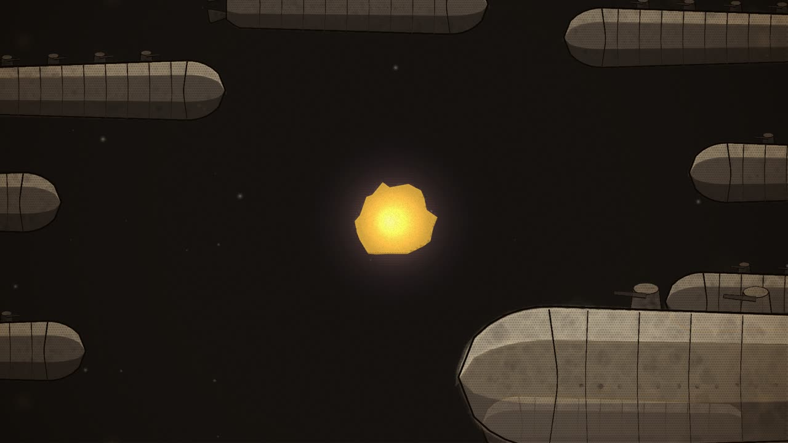
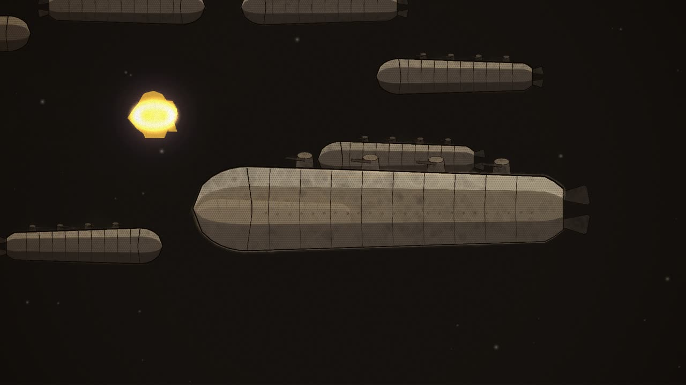
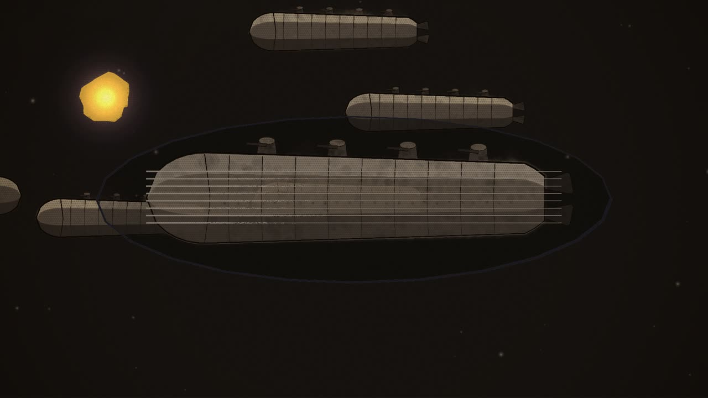
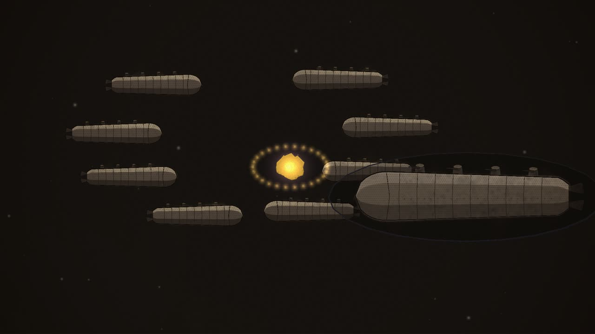

Review · Round 6 · the chapters · the whole film
Chapter 10: Go, and Do Not Return, the draft
The first pass with motion, 2:39 at 12 drawings a second, over the same sound as the storyboard. One set: the fleet wheeling round the sphere. The flagship is twisted by redrawing it, bent and flipped; once the blue-white beam locks it, its drawing stops boiling and holds still.
Notes: pause anywhere, type, and press Enter (or Pin) to pin a note to that moment. They stay in this browser. Copy notes puts them on the clipboard as text, timed and with their shot, for the decision sheet or a message.
Notes
The shots

A The chapter's page 0:00–0:06
seenThe pulp page, Go, and Do Not Return, the opening words under a drop cap.
cameraa slow push

B The fleet, headed for Mars 0:06–0:24
seenDeep space; Mars far off; the Outsiders' fleet, a cluster wheeling slowly about its own centre as it drives on; a golden spark coming.
cameraa slow push toward the cluster

C Every ray 0:24–0:44
seenThe golden sphere within the ring of ships.
cameraholds the sphere at the centre of the beams

D Pure force am I 0:44–1:19
seenThe sphere, close; the ships beyond.
camerain close on the sphere

E The flagship 1:19–1:28
seenThe greatest ship of the fleet.
cameramoves from the sphere to the flagship

F Twisted 1:28–2:32
seenThe flagship in the sphere's grip.
cameraholds on the ship through it all

G Go 2:32–2:39
seenThe sphere and the fleet.
camerapulls back as they go